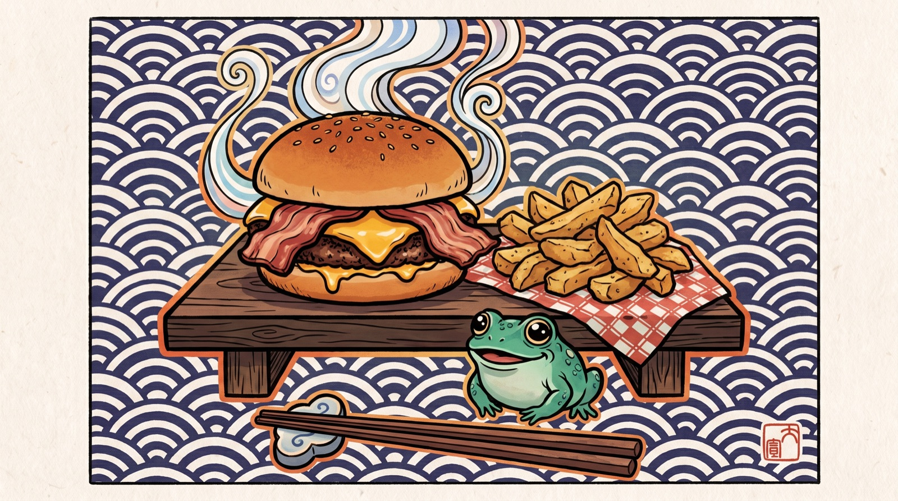

A pocket food guide for the three of us, built around where we actually are each day. Home base on the Upper East Side, birthday night in Queens, the Final in Tribeca. And yes, the melon burger is the crown.

The melon burger. The one we already know we love, and it happens to sit about three blocks from home base at 765 Park. A char-griddled classic on a squishy bun with a pile of cottage fries, checkered tablecloths, zero pretense. This is the anchor of the whole weekend: breakfast plan, hangover plan, "we have an hour" plan.
Type any food and I'll point the crew somewhere good near where we are that day. Try sushi, tacos, bbq, ramen, steak, brunch.
Pick a spot, a night, a headcount. Open the booking yourself, or hand it to Darby and it lands in Gordon's inbox to lock for the crew.
Around 765 Park Ave, where we're staying. Easy walk-outs for the crew.
Tiny Milanese cafe, serious espresso and panini. The civilized "before we do anything" stop.
Good gastropub burgers and cocktails, roomy, group-friendly, laid back. The unfussy sit-down near home.
British pub with a back garden, fish and chips, good beer. Room to spread out with a group.
Tiny omakase counter if we want one nicer, hands-in-the-air meal near home. Books up, so reserve early.
Zeds Dead is at Forest Hills Stadium (doors 5pm). So the birthday meal is either an early bite near the venue before the bass, or a proper celebration back in the city after. Both are covered.
Agora Taverna (Greek, 70-09 Austin St, ~5 min from the gates) is the reserve-now pick: proper sit-down, seat the crew at 3:30 (right off the LIRR from the Knicks photo ops at Fanatics), out by 4:45, doors at 5. Nick's Pizza is the coal-oven walk-in backup and Dirty Pierre's at Station Square is the one-last-beer-by-the-gates move. Know before you go: Station House takes no reservations on concert days, and Danny Brown has closed, so the whole strip goes walk-in-crazy from 4pm. A booked table is the only calm one.
Roll back for a late toast. A steakhouse or a loud, joyful spot fits 40 years of friendship. Tell me the vibe and I'll lock a reservation.
Note: it is a concert Saturday, so the pre-show table is the one thing we do NOT keep loose. Book the 3:30 seating (it chains off the 2:20 Shamet photo op at Javits), and the rest of the night stays free-flowing. The night is yours.
You asked, so it is locked in. Endless skewers, picanha, the works. A churrascaria is a genuine contender for the birthday feast.
The old-school all-you-can-eat churrasco. Green means keep the skewers coming. Loud, festive, built for a crew celebrating.
The reliable, gleaming version: picanha, lamb, the market table. Never a miss for a group with an appetite.
Grill plus buffet on the Little Brazil block. Lower-key and cheaper if the crew wants churrasco without the full rodizio ceremony.
A beloved neighborhood Brazilian spot on the Queens side, an option the day we are out toward Forest Hills.
Around the Javits Center (34th & 11th). Fast, close, get back to the cards and collectibles.
A short walk from Javits, lots of choices for a split crew, no wait to sit. Refuel and go.
If we want a real table and a drink after a big Fanatics day, this side of town has solid options minutes away.
Thu 7/16, Richard Rodgers on W 46th. Eat before the curtain; Tiesto in Brooklyn is the next night.
Tacos before Hamilton, decided. Adobada or carne asada, standing-counter style, and the line moves fast. No reservations to worry about, just get there with a little cushion before curtain.
The Broadway institution, steps from the theater, used to getting you fed and out before the overture. Reserve if the night wants a table instead.
Watching at Brickyard Craft Kitchen & Bar, 23 Park Place, where Tribeca meets the Financial District. Our table, kickoff 3pm, get the headcount right.
One of the biggest bars downtown: 40+ TVs, 40 taps (heavy on IPAs, margaritas on tap too), brick-oven pizza and wings. Order the Brickyard Burger (brisket-short rib blend with pork belly), rosemary fries for the table, and the buffalo chicken dip for the nervous minutes.
Lore: it is the old Barleycorn space, reborn as a sports bar in 2023 by the crew behind All Stars Bar & Grill on 57th, and the long happy hour (from 11am) is the stuff of downtown legend. Arrive by 1:30 for a 3pm kickoff, claim the screens, settle in.
Bren's the local host, and Tiesto/Breakaway is out at Under the K Bridge Park (Greenpoint) Fri night. Let him pick, but here are strong ones.
The famous wood-fired pies, fun, loud, group energy. A Brooklyn rite of passage that fits the crew.
Grab something solid in Greenpoint before the gates. Bren knows the block, this is his call to make.